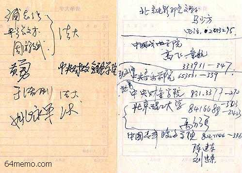
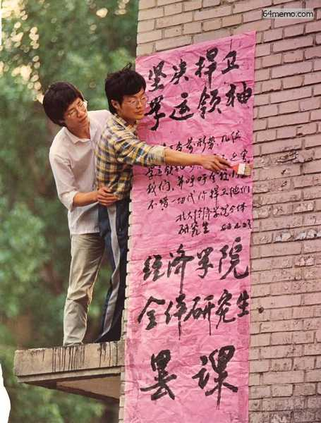
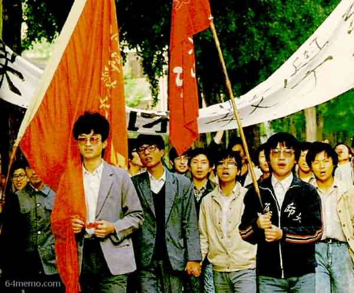
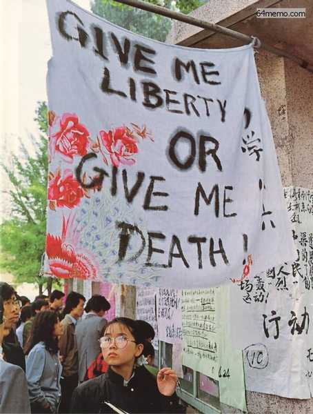
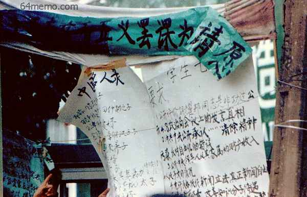
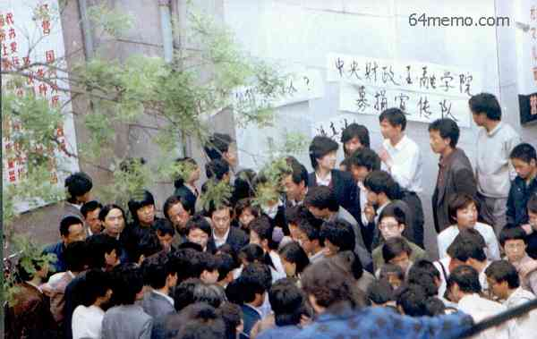

上一个帖子介绍了发生在上海的“《世界经济导报》事件”，接下来要聊一下4·26社论出笼的经过。
所谓的“4·26社论”，是指人民日报在4月26日发表的社论《必须旗帜鲜明地反对动乱》。几乎所有介绍“六四事件”的书籍或文章，以及大部分当事人的回忆中，都会提到“4·26社论”。由此可见它的重要性。
这个社论为啥如此之重要捏？
首先，从标题就可以看出，官方把学潮定性为“动乱”；
其次，在正文中提到：
这样一篇社论，直接导致如下后果：
1. 激怒了参与学运的高校师生。很多师生本来是出于爱国，为了消除腐败、为了争取言论自由，而参与学运。结果被扣上动乱的大帽子，当然恼火了。
2. 社论的定性也断了参与者的后路。在天朝的政治语言中，“动乱”一词的分量是很重的。参加动乱、组织动乱，几乎等同于反革命，是可以直接判刑滴。所以，当时很多学运的骨干分子就想，反正已经被扣上动乱的罪名，已经没了退路（即使中途退出，也免不了被秋后算账）。干脆就一条路走到黑。
正是由于上述原因，导致全国范围内出现了更多的学生运动；学生和政府之间的对立更加严重；朝廷中的保守派也乘机强硬起来，并指责改革派太软弱。最终的事态发展，直接导致了赵总书记的下台以及6月4日的血腥清场。
鉴于“4·26社论”如此重要，俺有必要详细介绍一下这个社论是如何出台的。今天这一帖，重点介绍社论之前的民间形势。
说到北高联的成立，不得不提一下刘刚。
此人84年毕业于中科大物理系，87年北大物理硕士毕业。作为一个活跃民主人士，早在1988年，刘刚就和王丹等人一同发起“北大民主沙龙”。六四运动的时候，正是由于刘刚居中联络，北高联才得以在短短几天内成立。
对这样一个重要人物，党国当然不会忘记他的功劳——六四被血腥镇压之后，在朝廷的全国通缉名单上，刘刚名列第三（仅次于：王丹、吾尔开希）。当然，这是后话了。
话说胡耀邦逝世后，刘刚经常跟高校学生一起到广场参加悼念活动（他当时在社会经济科学研究所任职，已不是学生身份）。悼念期间，他特地留意了各个高校的活跃学生骨干，并与这些骨干建立联系。
刘刚当时一直想成立一个严密的跨院校学生组织。有了这样的学生组织，就可以有效协调各个高校的行动，避免各自为政。跨院校学生组织还有一个好处——可以作为跟政府对话的主体。
插一句：虽然在之前的4月21日已经成立了一个跨院校的“北京高校行动委员会”（在《胡耀邦的两场追悼会》一文有提及）。但那个委员会只是为了协调各个高校4月22日在广场上的悼念活动，算不上是严密的组织（貌似连组织章程都没）。
在追悼会结束的次日（23日），刘刚设法联系了各个高校的活跃分子，约他们当晚到自己单位的宿舍（位于圆明园南门）开会。
当天晚上据说有二十几所高校的60-70人如约前来。由于人多，刘刚把学生们带到单位的会议室开会。
会议的议题主要有三个：
1. 讨论组织名称
经投票，组织名称定为“北京高校学生自治临时联合会”，当时简称“临时学联”。后来把“临时”二字去掉，变为“北京高校学生自治联合会”——这就是传说中的“北高联/高自联”。
2. 讨论组织章程
组织的章程是吾尔开希预先准备的，大部分内容是从“中国共产党章程”山寨的（比如：民主集中制、少数服从多数、等）。
组织的口号是：“民主、自由、人权”。应在场政法大学代表的要求，加入“法制”。
3. 选举领导机构
关于组织的领导机构，吾尔开希本来设想的是主席负责制。刘刚建议修改为轮值主席制。据刘刚回忆，他当时担心朝廷会采取“擒贼先擒王”的手段对付学生组织。而“轮值主席制”可以分散个人风险，组织的运作也不易被党国的爪牙破坏（由此看来，吾尔开希作为在校生的江湖经验还是欠缺啊）。刘刚的这个意见被一致接受。
经过选举，确定北大、清华、人大、北师大、政法大学、民族学院、电影学院作为常委学校。所谓常委学校，就是该校派出的代表作为北高联的常委。
下图是当年参加秘密会议的学生骨干签名。该签名被与会者宋立峰保存，宋逃亡国外后交予刘刚。

（参加秘密会议的学生骨干签名）
（关于“秘密会议”的更详细介绍，可以参见刘刚本人的回忆《“高自联”成立的前前后后 @ 六四档案》）
聊完“北高联”成立的经过，顺便再八卦一个插曲。
这么多的人一起秘密开会，当然逃不过党国走狗的眼睛。会议刚刚结束，裆中央在10点30分就接到安全部密报（摘自《天安门文件》）：
比较奇怪的是：10点30分，会议结束没多久，密报就已经到了安全部，而且密报还很详细，连成立的组织结构，选出的主席，都一清二楚。这说明啥？？？
俺觉得有三种可能：
1. 《天安门文件》杜撰
这种可能性比较小。《天安门文件》一书曝光了不少安全部的密报，有些密报写得很细。除非是内部高层人士泄密，一般人很难编造如此全面的内容。而且《天安门文件》的一些内容同《赵紫阳回忆录》、《李鹏日记》的内容是互相印证的。
2. 会场事先被窃听
这种可能性也比较小。当时因为人多，临时改到刘刚单位的会议室开会。朝廷的走狗不太可能未卜先知，预先到那个会议室安放窃听设备。
3. 与会人员有内奸
这种可能性最大。只有内线才能如此详细地报告开会的结果。至于谁是内奸，那只有朝廷六扇门的人才晓得喽。等到党国垮台的那天，咱们或许能从官方的解密档案中获得真相。
顺便提醒大伙儿一下：今后列位看官如果要从事反党活动，一定要小心朝廷的密探（这可不是闹着玩的哦）。
由于多次请愿（包括下跪请愿）没有得到官方的回应，以北高联为首的各个学生组织采取了进一步的行动，向朝廷施加压力。
从24日开始，北京38所高校大约6万多名学生开始罢课。如此大规模的罢课，在文革后尚属首次。到了25日，涉及罢课的高校增加到43所。
大规模罢课的同时，北高联向政府提出如下三项要求。声称如果要求不满足，就不复课。
1. 与国务院有代表性的官员对话
2. 对新华门事件公开道歉和惩罚凶手
3. 国内传媒如实报导学生运动
除了罢课，有些大学生走出校园，到帝都市区呼吁“罢工、罢市”。

（北大经济学院贴出罢课通知）

（北师大学生23日罢课上街游行）

（飘扬在北大三角地上空的一面绣花床单，上书

（西单十字路口的大字报《中国太子党名人录》、《学生七条要求》以及罢课横幅）
为了把北京的学运扩展到全国，北高联呼吁每个学生寄10封信给自己认识的人。
另外，北高联决定派出二百至三百学生代表前往全国15个大城市演讲、联络。这15个城市包括：天津、济南、沈阳、长沙、成都、西安、兰州、石家庄、郑州、广州、太原、上海、南京、武汉。
当年没有互联网，学生搞宣传都要靠自己动口（高音喇叭）动手（复印传单）。为了筹钱买宣传工具（喇叭，油印设备），很多高校学生到闹市区搞募捐。

（中央财经金融学院的学生在街头募捐）
从追悼会结束到4月25日，民间出现了少数过激言论。俺摘录几个有代表性的。
23日下午，人民大学贴出了名为《中国人民大学博士生宣言》的大字报，内容如下。请注意俺标粗体的第4条。这一条触到了老邓的痛处——当时老邓以85高龄担任军委主席。
估计很多人没听说过任畹町这个人。此人是1979年西单民主墙事件的知名民主人士。他在24日到广场上做了一个公开演讲，其中提到如下言论（摘自官方出版的《惊心动魄的五十六天》）：
上述这些过激言论，后来都成为保守派给学潮定性“动乱”的依据。
在胡耀邦追悼会那天，西安和长沙发生了所谓的“打砸抢事件”。这到底是咋回事捏？在这些所谓的“打砸抢事件”中，以西安的“四·二二事件”最为知名。俺就稍微介绍一下此事。
4月22日，陕西省委发给裆中央的紧急电报内容如下（摘自《天安门文件》）：
从陕西省委的密报以及官方的公开报道来看，大伙儿会以为是西安当地的刁民犯上作乱。实际情况如何捏？在《中国改革年代的政治斗争》一书，作者杨继绳是这样说的：
得益于无处不在的朝廷爪牙，上述这些事件最终都传到了朝廷高官的耳朵里。俺不妨揣测一下：在这帮朝廷高官中，最高兴的应该是李鹏同学。在本系列的前几个帖子，已经分析了小李同学的心态——他不仅仅满足于总理职务——而是在觊觎总书记宝座。当年的“八六学潮”导致总书记老胡（胡耀邦）下台，时任总理的老赵（赵紫阳）顶替老胡做了总书记。如今闹出“八九学潮”（而且规模更大），小李肯定在心中盘算着：如果能利用这次学潮把老赵赶下台，那总书记的宝座，舍我其谁啊！
所以，小李同学很可能伙同他的亲信李锡铭（北京市委书记）和陈希同（北京市长），把上述这些事情的报告精心准备一番，然后拿给政治局委员和老邓过目......
在下一帖子里，俺会详细介绍当时高层的举动。
（本文照片引自 六四档案 和 自由中国论坛）
回到本系列的目录
★“四·二六社论”的重要性
所谓的“4·26社论”，是指人民日报在4月26日发表的社论《必须旗帜鲜明地反对动乱》。几乎所有介绍“六四事件”的书籍或文章，以及大部分当事人的回忆中，都会提到“4·26社论”。由此可见它的重要性。
这个社论为啥如此之重要捏？
首先，从标题就可以看出，官方把学潮定性为“动乱”；
其次，在正文中提到：
这是一场有计划的阴谋，是一次动乱，其实质是要从根本上否定中国共产党的领导，否定社会主义制度。这是摆在全党和全国各族人民面前的一场严重的政治斗争。。
这样一篇社论，直接导致如下后果：
1. 激怒了参与学运的高校师生。很多师生本来是出于爱国，为了消除腐败、为了争取言论自由，而参与学运。结果被扣上动乱的大帽子，当然恼火了。
2. 社论的定性也断了参与者的后路。在天朝的政治语言中，“动乱”一词的分量是很重的。参加动乱、组织动乱，几乎等同于反革命，是可以直接判刑滴。所以，当时很多学运的骨干分子就想，反正已经被扣上动乱的罪名，已经没了退路（即使中途退出，也免不了被秋后算账）。干脆就一条路走到黑。
正是由于上述原因，导致全国范围内出现了更多的学生运动；学生和政府之间的对立更加严重；朝廷中的保守派也乘机强硬起来，并指责改革派太软弱。最终的事态发展，直接导致了赵总书记的下台以及6月4日的血腥清场。
鉴于“4·26社论”如此重要，俺有必要详细介绍一下这个社论是如何出台的。今天这一帖，重点介绍社论之前的民间形势。
★北高联（高自联）成立
◇刘刚其人
说到北高联的成立，不得不提一下刘刚。
此人84年毕业于中科大物理系，87年北大物理硕士毕业。作为一个活跃民主人士，早在1988年，刘刚就和王丹等人一同发起“北大民主沙龙”。六四运动的时候，正是由于刘刚居中联络，北高联才得以在短短几天内成立。
对这样一个重要人物，党国当然不会忘记他的功劳——六四被血腥镇压之后，在朝廷的全国通缉名单上，刘刚名列第三（仅次于：王丹、吾尔开希）。当然，这是后话了。
◇物色学生骨干
话说胡耀邦逝世后，刘刚经常跟高校学生一起到广场参加悼念活动（他当时在社会经济科学研究所任职，已不是学生身份）。悼念期间，他特地留意了各个高校的活跃学生骨干，并与这些骨干建立联系。
刘刚当时一直想成立一个严密的跨院校学生组织。有了这样的学生组织，就可以有效协调各个高校的行动，避免各自为政。跨院校学生组织还有一个好处——可以作为跟政府对话的主体。
插一句：虽然在之前的4月21日已经成立了一个跨院校的“北京高校行动委员会”（在《胡耀邦的两场追悼会》一文有提及）。但那个委员会只是为了协调各个高校4月22日在广场上的悼念活动，算不上是严密的组织（貌似连组织章程都没）。
◇秘密会议
在追悼会结束的次日（23日），刘刚设法联系了各个高校的活跃分子，约他们当晚到自己单位的宿舍（位于圆明园南门）开会。
当天晚上据说有二十几所高校的60-70人如约前来。由于人多，刘刚把学生们带到单位的会议室开会。
会议的议题主要有三个：
1. 讨论组织名称
经投票，组织名称定为“北京高校学生自治临时联合会”，当时简称“临时学联”。后来把“临时”二字去掉，变为“北京高校学生自治联合会”——这就是传说中的“北高联/高自联”。
2. 讨论组织章程
组织的章程是吾尔开希预先准备的，大部分内容是从“中国共产党章程”山寨的（比如：民主集中制、少数服从多数、等）。
组织的口号是：“民主、自由、人权”。应在场政法大学代表的要求，加入“法制”。
3. 选举领导机构
关于组织的领导机构，吾尔开希本来设想的是主席负责制。刘刚建议修改为轮值主席制。据刘刚回忆，他当时担心朝廷会采取“擒贼先擒王”的手段对付学生组织。而“轮值主席制”可以分散个人风险，组织的运作也不易被党国的爪牙破坏（由此看来，吾尔开希作为在校生的江湖经验还是欠缺啊）。刘刚的这个意见被一致接受。
经过选举，确定北大、清华、人大、北师大、政法大学、民族学院、电影学院作为常委学校。所谓常委学校，就是该校派出的代表作为北高联的常委。
下图是当年参加秘密会议的学生骨干签名。该签名被与会者宋立峰保存，宋逃亡国外后交予刘刚。
（参加秘密会议的学生骨干签名）
（关于“秘密会议”的更详细介绍，可以参见刘刚本人的回忆《“高自联”成立的前前后后 @ 六四档案》）
◇党国爪牙的密报
聊完“北高联”成立的经过，顺便再八卦一个插曲。
这么多的人一起秘密开会，当然逃不过党国走狗的眼睛。会议刚刚结束，裆中央在10点30分就接到安全部密报（摘自《天安门文件》）：
当天晚上十时三十分，安全部向中南海紧急报告。报告全文如下：
二十三日晚六时至十时，北京二十一所高等院校的学生代表在圆明园集会，成立了学生临时筹委委员会，选举中国政法大学学生周勇军为主席（周是四月二十二日在天安门广场递交请愿书的三位代表之一）。同时，还成立了宣传演讲、募捐、纠察等三支队伍，分别指定了临时负责人。
委员会总部设在政法大学内，今天上午学生已向政法大学学生会发出交让办公室的命令。据委员会声称：今后高校学生将由委员会统一指挥。
比较奇怪的是：10点30分，会议结束没多久，密报就已经到了安全部，而且密报还很详细，连成立的组织结构，选出的主席，都一清二楚。这说明啥？？？
俺觉得有三种可能：
1. 《天安门文件》杜撰
这种可能性比较小。《天安门文件》一书曝光了不少安全部的密报，有些密报写得很细。除非是内部高层人士泄密，一般人很难编造如此全面的内容。而且《天安门文件》的一些内容同《赵紫阳回忆录》、《李鹏日记》的内容是互相印证的。
2. 会场事先被窃听
这种可能性也比较小。当时因为人多，临时改到刘刚单位的会议室开会。朝廷的走狗不太可能未卜先知，预先到那个会议室安放窃听设备。
3. 与会人员有内奸
这种可能性最大。只有内线才能如此详细地报告开会的结果。至于谁是内奸，那只有朝廷六扇门的人才晓得喽。等到党国垮台的那天，咱们或许能从官方的解密档案中获得真相。
顺便提醒大伙儿一下：今后列位看官如果要从事反党活动，一定要小心朝廷的密探（这可不是闹着玩的哦）。
★学生的进一步行动
由于多次请愿（包括下跪请愿）没有得到官方的回应，以北高联为首的各个学生组织采取了进一步的行动，向朝廷施加压力。
◇大规模罢课
从24日开始，北京38所高校大约6万多名学生开始罢课。如此大规模的罢课，在文革后尚属首次。到了25日，涉及罢课的高校增加到43所。
大规模罢课的同时，北高联向政府提出如下三项要求。声称如果要求不满足，就不复课。
1. 与国务院有代表性的官员对话
2. 对新华门事件公开道歉和惩罚凶手
3. 国内传媒如实报导学生运动
除了罢课，有些大学生走出校园，到帝都市区呼吁“罢工、罢市”。
（北大经济学院贴出罢课通知）
（北师大学生23日罢课上街游行）
（飘扬在北大三角地上空的一面绣花床单，上书
不自由 毋宁死）
（西单十字路口的大字报《中国太子党名人录》、《学生七条要求》以及罢课横幅）
◇跨城市串联
为了把北京的学运扩展到全国，北高联呼吁每个学生寄10封信给自己认识的人。
另外，北高联决定派出二百至三百学生代表前往全国15个大城市演讲、联络。这15个城市包括：天津、济南、沈阳、长沙、成都、西安、兰州、石家庄、郑州、广州、太原、上海、南京、武汉。
◇街头募捐
当年没有互联网，学生搞宣传都要靠自己动口（高音喇叭）动手（复印传单）。为了筹钱买宣传工具（喇叭，油印设备），很多高校学生到闹市区搞募捐。
（中央财经金融学院的学生在街头募捐）
★某些过激言论
从追悼会结束到4月25日，民间出现了少数过激言论。俺摘录几个有代表性的。
◇人大博士生的大字报
23日下午，人民大学贴出了名为《中国人民大学博士生宣言》的大字报，内容如下。请注意俺标粗体的第4条。这一条触到了老邓的痛处——当时老邓以85高龄担任军委主席。
一 完全支持北京高校学生提出的「七点建议」，坚决支持学生及社会各届人士的爱国民主运动。
二 即日起，博士生全部罢课。
三 「集体领导、集体决策造成的失误」（李鹏语）应以集体辞职，来表示「集体负责」（李鹏语）的诚意。
四 强烈要求七十五岁以上的党政军领导全部辞职。
五 反对暴力，保护人权，军队不应参加和干预国家事务。
六 中国共产党活动经费不得由国库负责。
七 解除报禁、新闻自由，允许民办报刊、电台和电视台。
八 由社会各届人士成立「廉政委员会」，清查党政领导中的腐败现象，立案审查高干子女亲属的非法经商活动，并将结果公布于众。
◇任畹町在广场的演讲
估计很多人没听说过任畹町这个人。此人是1979年西单民主墙事件的知名民主人士。他在24日到广场上做了一个公开演讲，其中提到如下言论（摘自官方出版的《惊心动魄的五十六天》）：
共产党统治的四十年，民不聊生，盗贼四起，物价飞涨，国民经济处在危谷。任畹町在演讲中公然否定“四项基本原则”，而“四项基本原则”恰恰是老邓认为不可动摇的政治底线。
......
“四项基本原则”如果不能从宪法中消失，那么“四项基本原则”必将高悬于人民利益之上，“一切权利属于人民”就是十足的骗局。
上述这些过激言论，后来都成为保守派给学潮定性“动乱”的依据。
★西安的四二二事件
在胡耀邦追悼会那天，西安和长沙发生了所谓的“打砸抢事件”。这到底是咋回事捏？在这些所谓的“打砸抢事件”中，以西安的“四·二二事件”最为知名。俺就稍微介绍一下此事。
4月22日，陕西省委发给裆中央的紧急电报内容如下（摘自《天安门文件》）：
今天下午，胡耀邦同志追悼会结束后，新成广场有六百名左右大学生集会，引起两万多人的围观。然后，新华社在当天就播发了新闻：
十七时左右，社会上一些不法分子焚烧了二辆汽车和五间房子，并与警察发生冲突。
十七时三十分左右，在学校领导和教师组织下，集会学生陆续返校。
二十时，武警部队对广场实行交通管制。不法分子逃跑时，又在西华门、钟楼附近焚烧汽车，抢劫商店。十八名不法分子被当场擒获。
二十四时西安局势基本恢复平静。
今天西安市的一些不法分子围攻陕西省政府大院，打砸抢烧。据有关部门提供材料，共烧汽车10辆，烧毁民房20多间......有100多名值勤的武警和公安人员被打伤。
从陕西省委的密报以及官方的公开报道来看，大伙儿会以为是西安当地的刁民犯上作乱。实际情况如何捏？在《中国改革年代的政治斗争》一书，作者杨继绳是这样说的：
新华社奉命报道部分群众的这些极端行为，为政府下一步采取强硬手段提供了根据。但是，驻当地分社记者和我们面谈的情况与报道很不一样。杨继绳在新华社当了几十年的高级记者，他这个说法还是比较可信的。
陕西分社老记者老何对我说，西安事件共死了13人，其中2名警察、11名群众，死者中还有中学生。开始是学生要求设灵堂，和警察发生冲突，警察动手打人。在树上看热闹的一名14岁男孩也拉下来毒打，一位穿便装的公安局副局长也错挨了警察的打。后来才发生群众冲省政府、烧汽车的事件。
看来新闻报道不符合事实的情况不止北京一处。
★俺的点评
得益于无处不在的朝廷爪牙，上述这些事件最终都传到了朝廷高官的耳朵里。俺不妨揣测一下：在这帮朝廷高官中，最高兴的应该是李鹏同学。在本系列的前几个帖子，已经分析了小李同学的心态——他不仅仅满足于总理职务——而是在觊觎总书记宝座。当年的“八六学潮”导致总书记老胡（胡耀邦）下台，时任总理的老赵（赵紫阳）顶替老胡做了总书记。如今闹出“八九学潮”（而且规模更大），小李肯定在心中盘算着：如果能利用这次学潮把老赵赶下台，那总书记的宝座，舍我其谁啊！
所以，小李同学很可能伙同他的亲信李锡铭（北京市委书记）和陈希同（北京市长），把上述这些事情的报告精心准备一番，然后拿给政治局委员和老邓过目......
在下一帖子里，俺会详细介绍当时高层的举动。
（本文照片引自 六四档案 和 自由中国论坛）
回到本系列的目录
版权声明
本博客所有的原创文章，作者皆保留版权。转载必须包含本声明，保持本文完整，并以超链接形式注明作者编程随想和本文原始地址：
https://program-think.blogspot.com/2012/05/june-fourth-incident-16.html
本博客所有的原创文章，作者皆保留版权。转载必须包含本声明，保持本文完整，并以超链接形式注明作者编程随想和本文原始地址：
https://program-think.blogspot.com/2012/05/june-fourth-incident-16.html